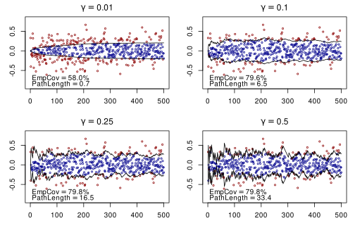
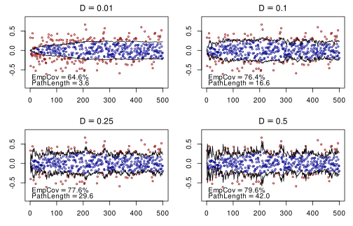
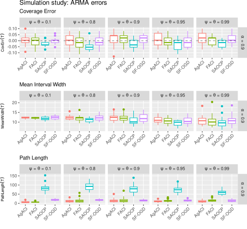
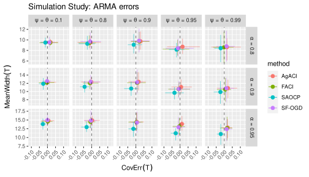

![]()
1 Introduction
Conformal Inference (CI) is a family of methods for generating finite sample prediction intervals around point predictions when data are exchangeable (Vovk, Gammerman, and Shafer 2005; Shafer and Vovk 2008; Angelopoulos and Bates 2022). The input point predictions can be derived from any prediction method, making CI a powerful tool for augmenting black-box prediction algorithms with prediction intervals. Classical CI methods are able to yield marginally valid intervals with only the assumption that the joint distribution of the data does not change based on the order of the observations (that is, they are exchangeable). However, in many real-world settings data are not exchangeable: for example, time series data usually cannot be assumed to be exchangeable due to temporal dependence. A recent line of research examines the problem of generating prediction intervals for observations that are observed online (that is, one at a time) and for which exchangeability is not assumed to hold (Gibbs and Candès 2021, 2022; Zaffran et al. 2022; Bhatnagar et al. 2023). The methods from this literature, which we refer to generally as Adaptive Conformal Inference (ACI) algorithms, work by adaptively adjusting the width of the generated prediction intervals in response to the observed data.
Informally, suppose a sequence of outcomes y_t \in \mathbb{R}, t = 1, \dots, T are observed one at a time. Before seeing each observation, we have at our disposal a point prediction \hat{\mu}_t \in \mathbb{R} that can be generated by any method. Our goal is to find an algorithm for producing prediction intervals [\ell_t, u_t], \ell_t \leq u_t such that, in the long run, the observations y_t fall within the corresponding prediction intervals roughly \alpha \times 100\% of the time: that is, \lim_{T \to \infty} \sfrac{1}{T} \sum_{t=1}^T \mathbb{I}\{ y_t \in [\ell_t, u_t] \} = \alpha. The original ACI algorithm (Gibbs and Candès 2021) is based on a simple idea: if the previous prediction interval at time (t-1) did not cover the true observation, then the next prediction interval at time t is made slightly wider. Conversely, if the previous prediction interval did include the observation, then the next prediction interval is made slightly narrower. It can be shown that this procedure yields prediction intervals that in the long run cover the true observations the desired proportion of the time.
The main tuning parameter of the original ACI algorithm is a learning rate that controls how fast prediction interval width changes. If the learning rate is too low, then the prediction intervals will not be able to adapt fast enough to shifts in the data generating distribution; if it is too large, then the intervals will oscillate widely. The critical dependence of the original ACI algorithm on proper choice of its learning rate spurred subsequent research into meta-algorithms that learn the correct learning rate (or an analogue thereof) in various ways, typically drawing on approaches from the online learning literature. In this paper, we present four such algorithms: Aggregated ACI (AgACI, Zaffran et al. 2022), Fully Adaptive Conformal Inference (FACI, Gibbs and Candès 2022), Scale-Free Online Gradient Descent (SF-OGD, Bhatnagar et al. 2023), and Strongly Adaptive Online Conformal Prediction (SAOCP, Bhatnagar et al. 2023). We note that the adaption of conformal inference techniques is an active area of research and the algorithms we focus on in this work are not exhaustive; see among others Feldman et al. (2023), Bastani et al. (2022), Xu and Xie (2021), and Xu and Xie (2023).
Our primary practical contribution is an implementation of each algorithm in an open source R package, AdaptiveConformal, which is available at https://github.com/herbps10/AdaptiveConformal. The package also includes routines for visualization and summary of the prediction intervals. We note that Python versions of several algorithms were also made available by Zaffran et al. (2022) and Bhatnagar et al. (2023), but to our knowledge this is the first package implementing them in R. In addition, several R packages exist for conformal inference in other contexts, including conformalInference focusing on regression (Tibshirani et al. 2019), conformalInference.fd, with methods for functional responses (Diquigiovanni et al. 2022), and cfcausal for causal inference related functionals (Lei and Candès 2020). Our second practical contribution is to compare the performance of the algorithms in simulation studies and in a case study generating prediction intervals for influenza incidence in the United States based on black-box point forecasts.
The rest of the paper unfolds as follows. In Section 2, we present a unified theoretical framework for analyzing the ACI algorithms based on the online learning paradigm. In Section 3 we provide descriptions of each algorithm along with their known theoretical properties. In Section 4 we compare the performance of the algorithms in several simulation studies. Section 5 gives a case study based on forecasting influenza in the United States. Finally, Section 6 provides a discussion and ideas for future research in this rapidly expanding field.
2 Theoretical Framework
Notation: for any integer N \geq 1 let \llbracket N \rrbracket := \{ 1, \dots, N \}. Let \mathbb{I} be the indicator function. Let \nabla f denote the gradient (subgradient) of the differentiable (convex) function f.
We consider an online learning scenario in which we gain access to a sequence of observations (y_t)_{t \geq 1} one at a time (see Cesa-Bianchi and Lugosi (2006) for an comprehensive account of online learning theory). Fix \alpha \in (0, 1) to be the target empirical coverage of the prediction intervals. The goal is to output at time t a prediction interval for the unseen observation y_{t}, with the prediction interval generated by an interval construction function \widehat{C}_{t}. Formally, let \widehat{C}_t be a function that takes as input a parameter \theta_t \in \mathbb{R} and outputs a closed prediction interval [\ell_t, u_t]. The interval construction function must be nested: if \theta^\prime > \theta, then \widehat{C}_t(\theta) \subseteq \widehat{C}_t(\theta^\prime). In words, larger values of \theta imply wider prediction intervals. The interval constructor is indexed by t to emphasize that it may use other information at each time point, such as a point prediction \hat{\mu}_t \in \mathbb{R}. We make no restrictions on how this external information is generated.
Define r_t := \inf\{\theta \in \mathbb{R} : \mathbb{I}(y_t \in \widehat{C}_t(\theta)) \} to be the radius at time t. The radius is the smallest possible \theta such that the prediction interval covers the observation y_t. A key assumption for the theoretical analysis of several of the algorithms is that the radii are bounded:
Assumption: there exists a D > 0 such that r_t < D for all t.
Next, we describe two existing definitions of interval construction functions.
2.1 Linear Intervals
A simple method for forming the prediction intervals is to use the parameter \theta_t to directly define the width of the interval. Suppose that at each time t we have access to a point prediction \hat{\mu}_t \in \mathbb{R}. Then we can form a symmetric prediction interval around the point estimate using \begin{aligned} \theta \mapsto \widehat{C}_t(\theta) := [\hat{\mu}_t - \theta, \hat{\mu}_t + \theta]. \end{aligned} We refer to this as the linear interval constructor. Note that in this case, the radius is simply the absolute residual r_t = |\hat{\mu}_t - y_t|.
2.2 Quantile Intervals
The original ACI paper proposed constructing intervals based on the previously observed residuals (Gibbs and Candès 2021). Let S : \mathbb{R}^2 \to \mathbb{R} be a function called a nonconformity score. A popular choice of nonconformity score is the absolute residual: (\mu, y) \mapsto S(\mu, y):= |\mu - y|. Let s_t := S(\hat{\mu}_t, y_t) be the nonconformity score of the tth-observation. The quantile interval construction function is then given by \begin{aligned} \widehat{C}_t(\theta_t) := [\hat{\mu}_t - \mathrm{Quantile}(\theta, \{ s_1, \dots, s_{t-1} \}), \hat{\mu}_t + \mathrm{Quantile}(\theta, \{ s_1, \dots, s_{t-1} \})] \end{aligned} where \mathrm{Quantile}(\theta, A) denotes the empirical \theta-quantile of the elements in the set A. Note that \widehat{C}_t is indeed nested in \theta_t because the Quantile function is non-decreasing in \theta.
Our proposed AdaptiveConformal package takes the absolute residual as the default nonconformity score, although the user may also specify any custom nonconformity score by supplying it as an R function.
2.3 Online Learning Framework
We now introduce a loss function that defines the quality of a prediction interval with respect to a realized observation. Define the pinball loss L^\alpha as (\theta, r) \mapsto L^\alpha(\theta, r) := \begin{cases} \alpha(\theta - r), & \theta \geq r \\ (1-\alpha)(r - \theta), & \theta < r. \end{cases} The way in which the algorithm gains access to the data and incurs losses is as follows:
- Sequentially, for t = 1, \dots, T:
- Predict radius \theta_t and form prediction interval \widehat{C}_t(\theta_t).
- Observe true outcome y_t and calculate radius r_t.
- Record \mathrm{err}_t := \mathbb{I}[y_t \not\in \widehat{C}_t(\theta_t)].
- Incur loss L^\alpha(\theta_t, r_t).
This iterative procedure is at the core of the online learning theoretical framework in which theoretical results have been derived.
2.4 Assessing ACI algorithms
There are two different perspectives we can take in measuring the quality of an ACI algorithm that generates a sequence (\theta_t)_{t \in \llbracket T \rrbracket}. First, we could look at how close the empirical coverage of the generated prediction intervals is to the desired coverage level \alpha. Formally, define the empirical coverage as the proportion of observations that fell within the corresponding prediction interval: \mathrm{EmpCov}(T) := \frac{1}{T} \sum_{t=1}^T (1 - \mathrm{err}_t). The coverage error is then given by \begin{aligned} \mathrm{CovErr}(T) := \mathrm{EmpCov}(T) - \alpha. \end{aligned} The second perspective is to look at how well the algorithm controls the incurred pinball losses. Following the classical framework from the online learning literature, we define the regret as the difference between the cumulative loss yielded by a sequence (\theta_t)_{t \in \llbracket T \rrbracket} versus the cumulative loss of the best possible fixed choice: \begin{aligned} \mathrm{Reg}(T) := \sum_{t=1}^T L^\alpha(\theta_t, r_t) - \inf_{\theta^* \in \mathbb{R}} \sum_{t=1}^T L^\alpha(\theta^*, r_t). \end{aligned} In settings of distribution shift, it may not be appropriate to compare the cumulative loss of an algorithm to a fixed competitor. As such, stronger notions of regret have been defined. The strongly adaptive regret is the largest regret over any subperiod of length k \in \llbracket T \rrbracket: \begin{aligned} \mathrm{SAReg}(T, m) := \max_{[\tau, \tau + m - 1] \subseteq \llbracket T \rrbracket} \left( \sum_{t=\tau}^{\tau + m - 1} L^{\alpha}(\theta_t, r_t) - \inf_{\theta^* \in \mathbb{R}} \sum_{t=\tau}^{\tau + m - 1} L^\alpha(\theta^*, r_t) \right). \end{aligned} Both ways of evaluating ACI methods are important because targeting only one or the other can lead to algorithms that yield prediction intervals that are not practically useful. As a simple pathological example of only targeting the coverage error, suppose we wish to generate \alpha = 50\% prediction intervals. We could choose to alternate \theta between 0 and \infty, such that \mathrm{err}_t alternates between 0 and 1. The empirical coverage would then trivially converge to the desired level of 50%. However, the same algorithm would yield infinite regret (see Bhatnagar et al. (2023) for a more in-depth example of an scenario in which coverage is optimal but the regret grows linearly). On the other hand, an algorithm that has arbitrarily small regret may not yield good empirical coverage. Suppose the observations and point predictions are constant: y_t = 1 and \hat{\mu}_t = 0 for all t \geq 1. Consider a simple class of algorithms that outputs constantly \theta_t = \theta' for some \theta' < 1. With the linear interval construction function, the prediction intervals are then \widehat{C}_t(\theta_t) = [-\theta', \theta']. The regret is given by \mathrm{Reg}(T) = 2T\alpha(1-\theta'), which approaches zero as \theta' approaches 1. The empirical coverage is, however, always zero. In other words, the regret can be arbitrarily close to zero while at the same time the empirical coverage does not approach the desired level.
These simple examples illustrate that, unfortunately, bounds on the coverage error and bounds on the regret are not in general interchangeable. It is possible, however, to show equivalencies by either (1) making distributional assumptions on the data or (2) using additional information about how the algorithm produces the sequence (\theta_t)_{t \in \llbracket T \rrbracket} (Bhatnagar et al. 2023).
It may also be informative to summarize a set of prediction intervals in ways beyond their coverage error or their regret. A common metric for prediction intervals is the mean interval width: \begin{aligned} \mathrm{MeanWidth}(T) := \frac{1}{T} \sum_{t=1}^T w_t, \end{aligned} where w_t := u_t - \ell_t is the interval width at time t.
Finally, we introduce a metric that is intended to capture pathological behavior that can arise with ACI algorithms where the prediction intervals oscillate between being extremely narrow and extremely wide. Define the path length of prediction intervals generated by an ACI algorithm as \begin{aligned} \mathrm{PathLength}(T) := \sum_{t=2}^T |w_t - w_{t-1}|. \end{aligned} A high path length indicates that the prediction intervals were variable over time, and a low path length indicates the prediction intervals were stable.
3 Algorithms
| Algorithm | Tuning Parameters | Original interval constructor |
|---|---|---|
| Adaptive Conformal Inference (ACI) | Learning rate \gamma | Quantile |
| Aggregated Adaptive Conformal Inference (AgACI) | Candidate learning rates (\gamma_k)_{1 \leq k \leq K} | Quantile |
| Fully Adaptive Conformal Inference (FACI) | Candidate learning rates (\gamma_k)_{1 \leq k \leq K} | Quantile |
| Scale-Free Online Gradient Descent (SF-OGD) | Learning rate \gamma or maximum radius D | Linear |
| Strongly Adaptive Online Conformal Prediction (SAOCP) | Learning rate \gamma, lifetime multiplier g | Linear |
As a simple running example to illustrate each algorithm, we simulate independently T = 500 values y_1, \dots, y_T following y_t \sim N(0, 0.2^2), \quad t \in \llbracket T \rrbracket. For demonstration purposes we assume we have access to unbiased predictions \hat{\mu}_t = 0 for all t \in \llbracket T \rrbracket. Throughout we set the target empirical coverage to \alpha = 0.8.
3.1 Adaptive Conformal Inference (ACI)
\begin{algorithm} \caption{Adaptive Conformal Inference} \begin{algorithmic} \State \textbf{Input:} starting value $\theta_1$, learning rate $\gamma > 0$. \For{$t = 1, 2, \dots, T$} \State \textbf{Output:} prediction interval $\widehat{C}_t(\theta_t)$. \State Observe $y_t$. \State Evaluate $\mathrm{err}_t = \mathbb{I}[y_t \not\in \widehat{C}_t(\theta_t)]$. \State Update $\theta_{t+1} = \theta_t + \gamma (\mathrm{err}_t - (1 - \alpha))$. \EndFor \end{algorithmic} \end{algorithm}
The original ACI algorithm (Gibbs and Candès (2021); Algorithm 1) adaptively adjusts the width of the prediction intervals in response to the observations. The updating rule for the estimated radius can be derived as an online subgradient descent scheme. The subgradient of the pinball loss function with respect to \theta is given by \begin{aligned} \nabla L^\alpha(\theta, r) &= \begin{cases} \{ -\alpha \}, &\theta < r, \\ \{ 1 - \alpha \}, & \theta > r, \\ [-\alpha, 1 - \alpha], &\theta = r \end{cases} \\ \end{aligned} It follows that, for all \theta_t \in \mathbb{R} and r_t \in \mathbb{R}, 1 - \alpha - \mathrm{err}_t \in \nabla L^\alpha(\theta_t, r_t). This leads to the following update rule for \theta based on subgradient descent: \begin{aligned} \theta_{t+1} = \theta_{t} + \gamma (\mathrm{err}_t - (1 - \alpha)), \end{aligned} where \gamma > 0 is a user-specified learning rate. For intuition, note that if y_t fell outside of the prediction interval at time t (\mathrm{err}_t = 1) then the next interval is widened (\theta_{t+1} = \theta_t + \gamma \alpha). On the contrary, if y_t fell within the interval (\mathrm{err}_t = 0) then the next interval is shortened (\theta_{t+1} = \theta_t - \gamma(1 - \alpha)). The learning rate \gamma controls how fast the width of the prediction intervals changes in response to the data.
3.1.1 Theoretical Guarantees
The ACI algorithm has the following finite sample bound on the coverage error (Gibbs and Candès 2021). For all \gamma > 0, |\mathrm{CovErr}(T)| \leq \frac{D + \gamma}{\gamma T}. This result was originally shown for ACI with the choice of the quantile interval constructor, although it can also be extended to other interval constructors Feldman et al. (2023). In addition, standard results for online subgradient descent yield the following regret bound with the use of the linear interval constructor, assuming that the true radii are bounded by D: \mathrm{Reg}(T) \leq \mathcal{O}(D^2 / \gamma + \gamma T) \leq \mathcal{O}(D \sqrt{T}), where the second inequality follows if the optimal choice of \gamma = D/\sqrt{T} is used (Bhatnagar et al. 2023). Taken together, these theoretical results imply that while the coverage error is guaranteed to converge to zero for any choice of \gamma, achieving sublinear regret requires choosing \gamma more carefully. This highlights the importance of both ways of assessing ACI algorithms: if we only focused on controlling the coverage error, we might not achieve optimal control of regret, leading to intervals that are not practically useful.
3.1.2 Tuning Parameters
Therefore, the main tuning parameter is the learning rate \gamma. The theoretical bounds on the coverage error suggest setting a large \gamma such that the coverage error decays quickly in T; however, in practice and setting \gamma too large will lead to intervals with large oscillations as seen in Figure 1. This is quantified in the path length, which increases significantly as \gamma increases, even though the empirical coverage remains near the desired value of 80%. On the other hand, setting \gamma too small will lead to intervals that do not adapt fast enough to distribution shifts. Thus, choosing a good value for \gamma is essential. However, the optimal choice \gamma = D / \sqrt{T} cannot be used directly in practice unless the time series length T is fixed in advance, or the so called “doubling trick” is used to relax the need to know T in advance (Cesa-Bianchi and Lugosi 2006).
The theoretical results guaranteeing the performance of the ACI algorithm do not depend on the choice of starting value \theta_1, and thus in practice any value can be chosen. Indeed, the effect of the choice of \theta_1 decays over time as a function of the chosen learning rate. In practice, substantive prior information can be used to pick a reasonable starting value. By default, the AdaptiveConformal package sets \theta_1 = \alpha when the quantile interval predictor is used, and \theta_1 = 0 otherwise, although in both cases the user can supply their own starting value. The behavior of the early prediction intervals in the examples (Figure 1) is driven by the small number of residuals available, which makes the output of the quantile interval constructor sensitive to small changes in \theta. In practice, a warm-up period can be used before starting to produce prediction intervals so that the quantiles of the residuals are more stable.
3.2 Aggregated Adaptive Conformal Inference (AgACI)
\begin{algorithm} \caption{Aggregated Adaptive Conformal Inference} \begin{algorithmic} \State \textbf{Input:} candidate learning rates $(\gamma_k)_{1 \leq k \leq K }$, starting value $\theta_1$. \State Initialize lower and upper BOA algorithms $\mathcal{B}^\ell := \texttt{BOA}(\alpha \leftarrow (1 - \alpha) / 2)$ and $\mathcal{B}^u := \texttt{BOA}(\alpha \leftarrow (1 - (1 - \alpha)/2))$. \For{$k = 1, \dots, K$} \State Initialize ACI $\mathcal{A}_k = \texttt{ACI}(\alpha \leftarrow \alpha, \gamma \leftarrow \gamma_k, \theta_1 \leftarrow \theta_1)$. \EndFor \For{$t = 1, 2, \dots, T$} \For{$k = 1, \dots, K$} \State Retrieve candidate prediction interval $[\ell^k_{t}, u^k_{t}]$ from $\mathcal{A}_k$. \EndFor \State Compute aggregated lower bound $\tilde{\ell}_t := \mathcal{B}^\ell((\ell^k_t : k \in \{ 1, \dots, K \}))$. \State Compute aggregated upper bound $\tilde{u}_t := \mathcal{B}^u((u^k_t : k \in \{ 1, \dots, K \}))$. \State \textbf{Output:} prediction interval $[\tilde{\ell}_t, \tilde{u}_t]$. \State Observe $y_t$. \For{$k = 1, \dots, K$} \State Update $\mathcal{A}_k$ with observation $y_t$. \EndFor \State Update $\mathcal{B}^\ell$ with observed outcome $y_t$. \State Update $\mathcal{B}^u$ with observed outcome $y_t$. \EndFor \end{algorithmic} \end{algorithm}
The Aggregated ACI (AgACI; Algorithm 2) algorithm solves the problem of choosing a learning rate for ACI by running multiple copies of the algorithm with different learning rates, and then separately combining the lower and upper interval bounds using an online aggregation of experts algorithm (Zaffran et al. 2022). That is, one aggregation algorithm seeks to estimate the lower (1-\alpha)/2 quantile, and the other seeks to estimate the upper 1 - (1 - \alpha) / 2 quantile. Zaffran et al. (2022) experimented with multiple online aggregation algorithms, and found that they yielded similar results. Thus, we follow their lead in using the Bernstein Online Aggregation (BOA) algorithm as implemented in the opera R package (Wintenberger 2017; Gaillard et al. 2023). BOA is an online algorithm that forms predictions for the lower (or upper) prediction interval bound as a weighted mean of the candidate ACI prediction interval lower (upper) bound, where the weights are determined by each candidate’s past performance with respect to the quantile loss. As a consequence, the prediction intervals generated by AgACI are not necessarily symmetric around the point prediction, as the weights for the lower and upper bounds are separate.
3.2.1 Theoretical Gaurantees
AgACI departs from our main theoretical framework in that it does not yield a sequence (\theta_t)_{t \in \llbracket T \rrbracket} whose elements yield prediction intervals via a set construction function \widehat{C}_t. Rather, the upper and lower interval bounds from a set of candidate ACI algorithms are aggregated separately. Thus, theoretical results such as regret bounds similar to those for the other algorithms are not available. It would be possible, however, to establish regret bounds for the pinball loss applied separately to the lower and upper bounds of the prediction intervals. It is unclear, however, how to convert such regret bounds into a coverage bound.
3.2.2 Tuning Parameters
The main tuning parameter for AgACI is the set of candidate learning rates. Beyond necessitating additional computational time, there is no drawback to having a large grid. As a default, AdaptiveConformal uses learning rates \gamma \in \{ 0.001, 0.002, 0.004, 0.008, 0.016, 0.032, 0.064, 0.128 \}. As a basic check, we can look at the weights assigned to each of the learning rates. If large weights are given to the smallest (largest) learning rates, it is a sign that smaller (or larger) learning rates may perform well. In addition each of the candidate ACI algorithms requires a starting value, which can be set to any value as discussed in the ACI section. Figure 2 illustrates AgACI applied to the running example with two sets of learning grids. The first grid is the default, and the second grid includes the additional value \gamma = \{ 0.0005 \}. For the first grid, we can see that for the lower bound AgACI assigns high weight to the lowest learning rate (\gamma = 0.001). Based on this observation, as a sensitivity check, we reran the algorithm with the second learning grid, which yields weights that are less concentrated on a single learning rate. The output prediction intervals are similar, although slightly smoother in the second grid, reflecting the lack of distributional shift in the simulated data.
3.3 Fully Adaptive Conformal Inference (FACI)
\begin{algorithm} \caption{Fully Adaptive Conformal Inference} \begin{algorithmic} \State \textbf{Input:} starting value $\theta_1$, candidate learning rates $(\gamma_k)_{1 \leq k \leq K }$, parameters $\sigma, \eta$. \For{$k = 1, \dots, K$} \State Initialize expert $\mathcal{A}_k = \texttt{ACI}(\alpha \leftarrow \alpha, \gamma \leftarrow \gamma_k, \theta_1 \leftarrow \theta_1)$. \EndFor \For{$t = 1, 2, \dots, T$} \State Define $p_t^k := w_t^k / \sum_{i=1}^K w_t^i$, for all $1 \leq k \leq K$. \State Set $\theta_t = \sum_{k=1}^K \theta_t^k p_t^k$. \State \textbf{Output:} prediction interval $\widehat{C}_t(\theta_t)$. \State Observe $y_t$ and compute $r_t$. \State $\bar{w}_{t}^k \gets w_t^k \exp(-\eta L^\alpha(\theta_t^k, r_t))$, for all $1 \leq k \leq K$. \State $\bar{W}_t \gets \sum_{i=1}^K \bar{w}_t^i$. \State $w_{t+1}^k \gets (1 - \sigma) \bar{w}_t^k + \bar{W}_t \sigma / K$. \State Set $\mathrm{err}_t := \mathbb{I}[y_t \not\in \widehat{C}_t(\theta_t)]$. \For{$k = 1, \dots, K$} \State Update ACI $\mathcal{A}_k$ with $y_t$ and obtain $\theta_{t+1}^k$. \EndFor \EndFor \end{algorithmic} \end{algorithm}
The Fully Adaptive Conformal Inference (FACI; Algorithm 3) algorithm was developed by the authors of the original ACI algorithm in part to address the issue of how to choose the learning rate parameter \gamma. In this respect the goal of the algorithm is similar to that of AgACI, although it is achieved slightly differently. FACI also aggregates predictions from multiple copies of ACI run with different learning rates, but differs in that it directly aggregates the estimated radii emitted from each algorithm based on their pinball loss (Gibbs and Candès 2022) using an exponential reweighting scheme (Gradu, Hazan, and Minasyan 2022). As opposed to AgACI, this construction allows for more straightforward development of theoretical guarantees on the algorithm’s performance, because the upper and lower bounds of the intervals are not aggregated separately.
3.3.1 Theoretical Guarantees
FACI was originally proposed with the choice of the quantile interval constructor. FACI has the following strongly-adaptive regret bound (Bhatnagar et al. 2023): for all \gamma > 0 and subperiod lengths m, \begin{aligned} \mathrm{SAReg}(T, m) \leq \widetilde{\mathcal{O}}(D^2 / \gamma + \gamma m). \end{aligned} If m is fixed a-priori, then choosing \gamma = D/\sqrt{m} yields a strongly adaptive regret bound of order \widetilde{\mathcal{O}}(D \sqrt{m}) (for a single choice of m). Practically, this result implies that, if we know in advance the time length for which we would like to control the regret, it is possible to choose an optimal tuning parameter value. However, we cannot control the regret simultaneously for all possible time lengths.
To establish a bound on the coverage error, the authors investigated a slightly modified version of FACI in which \theta_t is chosen randomly from the candidate \theta_{t_k} with weights given by p_{t,k}, instead of taking a weighted average. This is a common trick used in the literature as it facilitates theoretical analysis. In practice, the authors comment that this randomized version of FACI and the deterministic version lead to very similar results. The coverage error result also assumes that the hyperparameters can change over time: that is, we have t-specific \eta_{t} and \sigma_t, rather than fixed \eta and \sigma. The coverage error then has the following bound (Gibbs and Candès 2022), where \gamma_{\min} and \gamma_{\max} are the smallest and largest learning rates in the grid, respectively: |\mathrm{CovErr}(T)| \leq \frac{1 + 2\gamma_{\max}}{T \gamma_{\min}} + \frac{(1 + 2\gamma_{\max})^2}{\gamma_{\min}} \exp(\eta_t(1 + 2\gamma_{\max})) \frac{1}{T}\sum_{t=1}^T \eta_t + 2 \frac{1+\gamma_{\max}}{\gamma_{\min}} \frac{1}{T} \sum_{t=1}^T \sigma_t. Thus, if \eta_t and \sigma_t both converge to zero as t \to \infty, then the coverage error will also converge to zero. In addition, under mild distributional assumptions the authors provide a type of short-term coverage error bound for arbitrary time spans, for which we refer to (Gibbs and Candès 2022).
We note one additional result established by Gibbs and Candès (2022) on a slightly different regret bound in terms of the pinball loss, as it informs the choice of tuning parameters. Let \gamma_{\mathrm{max}} = \max_{1 \leq k \leq K} \gamma_k be the largest learning rate in the grid and assume that \gamma_1 < \gamma_2 < \cdots < \gamma_K with \gamma_{k+1}/\gamma \leq 2 for all 1 \leq k < K. Then, for any interval I = [r, s] \subseteq \llbracket T \rrbracket and any sequence \theta_r^*, \dots, \theta_s^*, under the assumption that \gamma_k \geq \sqrt{1 + 1 / |I|}, \begin{aligned} \frac{1}{|I|} \sum_{t=r}^s \mathbb{E}[L^\alpha(\theta_t, r_t)] - \frac{1}{|I|} \sum_{t=r}^s L^\alpha(\theta_t, \theta_t^*) \leq& \frac{\log(k / \sigma) + 2\sigma|I|}{\eta |I|} + \frac{\eta}{|I|} \sum_{t=r}^s \mathbb{E}[L^\alpha(\theta_t, r_t)^2] \\ &+ 2\sqrt{3}(1 + \gamma_{\mathrm{max}})^2 \max\left\{ \sqrt{\frac{\sum_{t=r+1}^s |\theta_t^* - \theta_{t-1}^*| + 1}{|I|}}, \gamma_1 \right\}, \end{aligned} where the expectation is over the randomness in the randomized version of the algorithm. Here the time interval I (with length |I|) is comparable to the time period length m for the strongly adaptive regret. The parameter |I|, the time interval of interest for which we would like to control, can be chosen arbitrarily.
3.3.2 Tuning parameters
The recommended settings for the tuning parameters depend on choosing a time interval length |I| for which we would like to control the pinball loss. The choice of |I| can be chosen arbitrarily. For the tuning parameter \sigma, the authors suggest the optimal choice \sigma = 1 / (2 |I|). Choosing \eta is more difficult. The authors suggest the following choice for \eta, which they show is optimal if there is in fact no distribution shift:
\begin{aligned}
\eta = \sqrt{\frac{3}{|I|}} \sqrt{\frac{\log(K \cdot |I|) + 2}{(\alpha)^2 (1 - \alpha)^3 + (1-\alpha)^2 \alpha^3 }}
\end{aligned}.
Note that this choice is optimal only for the quantile interval constructor, for which \theta_t is a quantile of previous nonconformity scores. As an alternative, the authors point out that \eta can be learned in an online fashion using the update rule
\begin{aligned}
\eta_t := \sqrt{\frac{\log(|I| K) + 2}{\sum_{s=t-|I|}^{t-1} L^\alpha(\theta_s, r_s)}}.
\end{aligned}
Both ways of choosing \eta led to very similar results in the original author’s empirical studies. In our proposed AdaptiveConformal package, the first approach is used when the quantile interval construction function is chosen, and the latter approach for the linear interval construction function.
Figure 3 illustrates FACI with the quantile interval construction function and with the learning rate grid \gamma \in \{ 0.001, 0.002, 0.004, 0.008, 0.016, 0.032, 0.064, 0.128 \}.
3.4 Scale-Free Online Gradient Descent (SF-OGD)
\begin{algorithm} \caption{Scale-Free Online Gradient Descent} \begin{algorithmic} \State \textbf{Input:} starting value $\theta_1$, learning rate $\gamma > 0$. \For{$t = 1, 2, \dots, T$} \State \textbf{Output:} prediction interval $\widehat{C}_t(\theta_t)$. \State Observe $y_t$ and compute $r_t$. \State Update $\theta_{t+1} = \theta_t - \gamma \frac{\nabla L^\alpha(\theta_t, r_t)}{\sqrt{\sum_{i=1}^t} \| \nabla L^\alpha(\theta_i, r_i) \|_2^2}$. \EndFor \end{algorithmic} \end{algorithm}
Scale-Free Online Gradient Descent (SF-OGD; Algorithm 4) is a general algorithm for online learning proposed by Orabona and Pál (2018). The algorithm updates \theta_t with a gradient descent step where the learning rate adapts to the scale of the previously observed gradients. SF-OGD was first used in the context of ACI as a sub-algorithm for SAOCP (described in the next section). However, it was found to have good performance by itself (Bhatnagar et al. 2023) in real-world tasks, so we have made it available in the package as a stand-alone algorithm.
3.4.1 Theoretical Guarantees
The SF-OGD algorithm with linear interval constructor has the following regret bound, which is called an anytime regret bound because it holds for all t \in \llbracket T \rrbracket (Bhatnagar et al. 2023). For any \gamma > 0, \begin{aligned} \mathrm{Reg}(t) \leq \mathcal{O}(D \sqrt{t}) \text{ for all } t \in \llbracket T \rrbracket. \end{aligned} A bound for the coverage error has also been established (Bhatnagar et al. 2023). For any learning rate \gamma = \Theta(D) (where \gamma = D / \sqrt{3} is optimal) and any starting value \theta_1 \in [0, D], then it holds that for any T > 1, \begin{aligned} |\mathrm{CovErr}(T)| \leq \mathcal{O}\left( (1 - \alpha)^{-2} T^{-1/4} \log T \right). \end{aligned}
3.4.2 Tuning parameters
Figure 4 compares results for several choices of \gamma to illustrate its effect. The optimal choice of learning rate is \gamma = D / \sqrt{3}, where D is the maximum possible radius. When D is not known, it can be estimated by using an initial subset of the time series as a calibration set and estimating D as the maximum of the absolute residuals of the observations and the predictions (Bhatnagar et al. 2023). Figure 4 illustrates SF-OGD for several values of \gamma.

3.5 Strongly Adaptive Online Conformal Prediction (SAOCP)
\begin{algorithm} \caption{Strongly Adaptive Online Conformal Prediction} \begin{algorithmic} \State \textbf{Input:} initial value $\theta_0$, learning rate $\gamma > 0$. \For{$t = 1, 2, \dots, T$} \State Initialize expert $\mathcal{A}_t = \texttt{SF-OGD}(\alpha \leftarrow \alpha, \gamma \leftarrow \gamma, \theta_1 \leftarrow \theta_{t-1})$, set weight $w_t^t = 0$. \State Compute active set $\mathrm{Active}(t) = \{ i \in \llbracket T \rrbracket : t - L(i) < i \leq t \}$ (see below for definition of $L(t)$). \State Compute prior probability $\pi_i \propto i^{-2} (1 + \lfloor \log_2 i \rfloor )^{-1} \mathbb{I}[i \in \mathrm{Active}(t)]$. \State Compute un-normalized probability $\hat{p}_i = \pi_i [w_{t,i}]_+$ for all $i \in \llbracket t \rrbracket$. \State Normalize $p = \hat{p} / \| \hat{p} \|_1 \in \Delta^t$ if $\| \hat{p} \|_1 > 0$, else $p = \pi$. \State Set $\theta_t = \sum_{i \in \mathrm{Active}(t)} p_i \theta_t^i$ (for $t \geq 2$), and $\theta_t = 0$ for $t = 1$. \State \textbf{Output:} prediction set $\widehat{C}_t(\theta_t)$. \State Observe $y_t$ and compute $r_t$. \For{$i \in \mathrm{Active}(t)$} \State Update expert $\mathcal{A}_t$ with $y_t$ and obtain $\theta_{t+1}^i$. \State Compute $g_t^i = \begin{cases} \frac{1}{D}\left(L^\alpha(\theta_t, r_t) - L^\alpha(\theta_t^i, r_t)\right) & w_t^i > 0 \\ \frac{1}{D}\left[L^\alpha(\theta_t, r_t) - L^\alpha(\theta_t^i, r_t))\right]_+ & w_t^i \leq 0 \\ \end{cases}$. \State Update expert weight $w_{t+1}^i = \frac{1}{t - i + 1}\left( \sum_{j=i}^t g_j^i \right) \left(1 + \sum_{j=i}^t w_j^i g_j^i \right)$. \EndFor \EndFor \end{algorithmic} \end{algorithm}
The Strongly Adaptive Online Conformal Prediction (SAOCP; Algorithm 5) algorithm was proposed as an improvement over the extant ACI algorithms in that it features stronger theoretical guarantees. SAOCP works similarly to AgACI and FACI in that it maintains a library of candidate online learning algorithms that generate prediction intervals which are then aggregated using a meta-algorithm (Bhatnagar et al. 2023). The candidate algorithm was chosen to be SF-OGD, although any algorithm that features anytime regret guarantees can be chosen. As opposed to AgACI and FACI, in which each candidate has a different learning rate but is always able to contribute to the final prediction intervals, here each candidate has the same learning rate but only has positive weight over a specific interval of time. New candidate algorithms are continually being spawned in order that, if the distribution shifts rapidly, the newer candidates will be able to react quickly and receive positive weight. Specifically, at each time point, a new expert is instantiated which is active over a finite ``lifetime”. Define the lifetime of an expert instantiated at time t as \begin{aligned} L(t) := g \cdot \max_{n \in \mathbb{Z}} \{ 2^n t \equiv 0 \mod 2^n \}, \end{aligned} where g \in \mathbb{Z}^* is a lifetime multiplier parameter. The active experts are weighted according to their empirical performance with respect to the pinball loss function. The authors show that this construction results in intervals that have strong regret guarantees.
3.5.1 Theoretical Guarantees
The theoretical results were established for SAOCP using the linear interval constructor. The following bound for the strongly adaptive regret holds for all subperiod lengths m \in \llbracket T \rrbracket (Bhatnagar et al. 2023): \begin{aligned} \mathrm{SAReg}(T, m) \leq 15 D \sqrt{m(\log T + 1)} \leq \tilde{\mathcal{O}}(D \sqrt m). \end{aligned} It should be emphasized that this regret bounds holds simultaneously across all m, as opposed to FACI, where a similar bound holds only for a single m. A bound on the coverage error of SAOCP has also been established as: \begin{aligned} |\mathrm{CovErr}(T)| \leq \mathcal{O}\left(\inf_\beta(T^{1/2 - \beta} + T^{\beta - 1} S_\beta(T))\right). \end{aligned} where S_{\beta}(T) is a technical measure of the smoothness of the cumulative gradients and expert weights for each of the candidate experts (Bhatnagar et al. 2023).
3.5.2 Tuning Parameters
The main tuning parameter for SAOCP is the learning rate \gamma of the SF-OGD sub-algorithms, which we saw in the previous section has for optimal choice \gamma = D / \sqrt{3}. Values for D that are too low lead to intervals that adapt slowly, and values that are too large lead to jagged intervals. In their experiments, the authors select a value for D by picking the maximum residual from a calibration set. The second tuning parameter is the lifetime multiplier g which controls the lifetime of each of the experts. We follow the original paper in setting g = 8. Figure 5 illustrates the SAOCP algorithm for choices of D \in \{0.01, 0.1, 0.25, 0.5 \}.

4 Simulation Studies
We present two empirical studies in order to compare the performance of the AgACI, FACI, SF-OGD, and SAOCP algorithms applied to simple simulated datasets. The original ACI algorithm was not included as it is not clear how to set the tuning rate \gamma, which can have a large effect on the resulting intervals. For both simulations we set the targeted empirical coverage to \alpha = 0.8, \alpha = 0.9, and \alpha = 0.95. For each algorithm, we chose the interval constructor that was used in its original presentation (see Table 1).
4.1 Time series with ARMA errors
In this simulation we reproduce the setup described in Zaffran et al. (2022) (itself based on that of Friedman, Grosse, and Stuetzle (1983)). The time series values y_t for t \in \llbracket T \rrbracket (T = 600) are simulated according to \begin{aligned} y_t = 10\sin(\pi X_{t,1}X_{t,2}) + 20(X_{t,3} - 0.5)^2 + 10X_{t,4} + 5 X_{t,5} + 0X_{t,6} + \epsilon_t, \end{aligned} where X_{t,i}, i = 1, \dots, 6, t \in \llbracket T \rrbracket are independently uniformly distributed on [0, 1] and the noise terms \epsilon_t are generated according to an ARMA(1, 1) process: \begin{aligned} \epsilon_t &= \psi \epsilon_{t-1} + \xi_t + \theta \xi_{t-1}, \\ \xi_t &\sim N(0, \sigma^2). \end{aligned} We set \psi and \theta jointly to each value in \{ 0.1, 0.8, 0.9, 0.95, 0.99 \} to simulate time series with increasing temporal dependence. The innovation variance was set to \sigma^2 = (1 - \psi^2) / (1 + 2\psi \xi + \xi^2) (to ensure that the process has constant variance). For each setting, 25 simulated datasets were generated.
To provide point predictions for the ACI algorithms, at each time t \geq 200 a random forest model was fitted to the previously observed data using the ranger R package (Wright and Ziegler 2017). The estimated model was then used to predict the subsequent time point. The maximum radius D was estimated as the maximum residual observed between time points t=200 and t=249. The ACI models were then executed starting at time point t = 250. All metrics are based on time points t \geq 300 to allow time for the ACI methods to initialize.
The coverage errors, mean interval widths, and path lengths of each of the algorithms for \alpha = 0.9 are shown in Figure 6 (results for \alpha \in \{ 0.8, 0.95 \} were similar and are available in the appendix). All methods achieved near optimal empirical coverage, although SAOCP tended to slightly undercover. The mean interval widths were similar across methods, although again SAOCP had slightly shorter intervals (as could be expected given its tendency to undercover). The path length of SAOCP was larger than any of the other methods. To investigate why, Figure 7 plots w_t - w_{t-1}, the difference in interval width between times t-1 and t, for each method in one of the simulations. The interval widths for AgACI and FACI change slowly relative to those for SF-OGD and SAOCP. For SAOCP, we can see the interval widths have larger fluctuations than for the other methods, explaining its higher path width.


4.2 Distribution shift
This simulation study features time series with distribution shifts. The setup is quite simple in order to probe the basic performance of the methods in response to distribution shift. As a baseline, we simulate time series of independent data with \begin{aligned} y_t &\sim N(0, \sigma_t^2), \\ \sigma_t &= 0.2, \end{aligned} for all t \in \llbracket T \rrbracket (T = 500). In the second type of time series, the observations are still independent but their variance increases halfway through the time series: \begin{aligned} y_t &\sim N(0, \sigma_t^2), \\ \sigma_t &= 0.2 + 0.5 \mathbb{I}[t > 250]. \end{aligned} In each case, the ACI algorithms are provided with the unbiased predictions \hat{\mu}_t = 0, t \in \llbracket T \rrbracket. Fifty simulated datasets were generated for each type of time series.
The coverage error, mean path length, and mean interval widths of the algorithms are summarized in Figure 8 (an alternative plot is included in the appendix as Figure 13). The coverage error of all the algorithms is near the desired value in the absence of distribution shift. On the contrary, all of the algorithms except AgACI and FACI undercover when there is distributional shift. SAOCP tends to have higher average path lengths than the other methods. An illustrative example of prediction intervals generated by each method for one of the simulated time series with distribution shift is shown in Figure 9. The SAOCP prediction intervals in the example before the distribution shift are more jagged than those produced by the other methods, which illustrates why SAOCP may have longer path lengths.
5 Case Study: Influenza Forecasting
Influenza is a highly infectious disease that is estimated to infect approximately one billion individuals each year around the world (Krammer et al. 2018). Influenza incidence in temperate climates tends to follow a seasonal pattern, with the highest number of infections during what is commonly referred to as the (Lofgren et al. 2007). Accurate forecasting of influenza is of significant interest to aid in public health planning and resource allocation. To investigate the accuracy of influenza forecasts, the US Centers for Disease Control (CDC) initiated a challenge, referred to as FluSight, in which teams from multiple institutions submitted weekly forecasts of influenza incidence (Biggerstaff et al. 2016). Reich et al. (2019) evaluated the accuracy of the forecasts over seven flu seasons from 2010 to 2017. As a case study, we investigate the use of ACI algorithms to augment the FluSight forecasts with prediction intervals.
The FluSight challenge collected forecasts for multiple prediction targets. For this case study, we focus on national (US) one-week ahead forecasts of weighted influenza-like illness (wILI), which is a population-weighted percentage of doctors visits where patients presented with influenza-like symptoms (Biggerstaff et al. 2016). The FluSight dataset, which is publicy available, include forecasts derived from 21 different forecasting models, from both mechanistic and statistical viewpoints Tushar et al. (2019). For our purposes, we treat the way the forecasts were produced as a black box.
Formally, let y_{t}, t \in \llbracket T \rrbracket be the observed national wILI at time t, and let \hat{\mu}_{j,t}, j \in \llbracket J \rrbracket, be the one-week ahead forecast of the wILI from model j at time t. Two of the original 21 forecasting methods were excluded from this case study due to poor predictive performance ( and ). In addition, six methods had identical forecasts (, , , , ), and therefore we only included one () in the analysis. The ACI methods were then applied to the log-observations and log-predictions, where the log-transformation was used to constrain the final prediction intervals to be positive. The first flu season (2010-2011) was used as a warm-up for each ACI method, and we report the empirical performance of the prediction intervals for the subsequent seasons (six seasons from 2012-2013 to 2016-2017). The ACI algorithms target prediction intervals with coverage of \alpha = 0.8, \alpha = 0.9, and \alpha = 0.95. As in the simulation study, we used the interval constructor corresponding to the original presentaiton of each algorithm (see Table 1).
The coverage errors, mean interval widths, and path lengths of the prediction intervals for each of the underlying forecast models is shown in Figure 10. In all cases the absolute coverage error was less than 0.1. SF-OGD performed particularly well, with coverage errors close to zero for all forecasting models. Interval widths were similar across methods, with SAOCP slightly shorter. Path Lengths were shorter for AgACI and FACI and longer for SAOCP.
As an illustrative example, in Figure 11 we plot the point forecasts from one of the forecasting models (based on SARIMA with no seasonal differencing) and the associated ACI-generated 90% prediction intervals for each season from 2011-2017. In general, in this practical setting all of the ACI algorithms yield quite similar prediction intervals. Interestingly, the forecasts in 2011-2012 underpredicted the observations for much of the season. The algorithm responds by making the intervals wider to cover the observations, and because the intervals are symmetric the lower bound then becomes unrealistically low. A similar phenomenon can be seen in the growth phase of the 2012/2013 season as well.
6 Discussion
The results of our simulations and case study show that, when tuning parameters are chosen well, Adaptive Conformal Inference algorithms yield well-performing prediction intervals. On the contrary, poor choice of tuning parameters can lead to intervals of low utility. Furthermore, in some cases the prediction intervals may appear to perform well with respect to metrics like the empirical coverage error, while simultaneously being useless in practice. The original ACI algorithm illustrates this phenomenon: too small a value of its learning rate \gamma yields prediction intervals that are not reactive enough, while too large a value yields intervals that change too fast. In both cases, the empirical coverage may appear well-calibrated, while the prediction intervals will not be useful. Thus, the core challenge in designing an ACI algorithm is in finding an optimal level of reactivity for the prediction intervals. As users of these algorithms, the challenge is in finding values for the tuning parameters that avoid pathological behaviors.
Several of the algorithms investigated in this paper handle the problem of finding an optimal level of reactivity by aggregating prediction intervals generated by a set of underlying ACI algorithms. Our results show the algorithms can perform well in multiple difficult scenarios. However, the overall effect of these approaches is to shift the problem to a higher level of abstraction: we still need to set tuning parameters that control the amount of reactivity, but do so at a higher level than the original ACI algorithm. It is desirable that these tuning parameters be easily interpretable, with simple strategies available for setting them. An advantage of the SF-OGD and SAOCP algorithms in this respect are that their main tuning parameter, the maximum radius D, is easily interpretable as the maximum possible difference between the input predictions and the truth. It is also straightforward to choose this parameter based on a calibration set, although this strategy does not necessarily work well in cases of distribution shift. We also found that an advantage of the AgACI method is its robustness to the choice of its main tuning parameter, the set of candidate learning rates. Indeed, if AgACI does not perform well, one can simply increase the number of candidate learning rates.
A key challenge in tuning the algorithms arises in settings of distribution shift, where methods for choosing hyperparameters based on a calibration set from before the distribution shift will likely not perform well. The second simulation study we conducted probed this setting in a simple scenario. We found that several of the methods yielded prediction intervals that had non-optimal empirical coverage. As we picked hyperparameters based on a calibration set formed before the distribution shift, it is not surprising that the resulting tuning parameters are not optimal. This underscores the difficulty in designing ACI algorithms that can adapt to distribution shifts, and in finding robust methods for choosing hyperparameters. In practice, it is possible the second simulation study does not accurately reflect real-world scenarios. Indeed, the benchmarks presented in Bhatnagar et al. (2023) using the datasets from the M4 competition (Makridakis, Spiliotis, and Assimakopoulos 2020), and using point predictions generated by diverse prediction algorithms, found that ACI algorithms exhibited good performance in terms of empirical coverage. Nevertheless, our recommendation for future papers in this line of research is to include simulation studies for simple distributional shift scenarios as a benchmark.
Our case study results illustrate the dependence of the ACI algorithms on having access to high-quality point predictions. If the predictions are biased, for example, then the prediction intervals may be able to achieve optimal coverage at the expense of larger interval widths. Using ensemble methods to combine forecasts from several flexible machine learning models is one strategy that can be used to hedge against model misspecification and improve the quality of forecasts (Makridakis, Spiliotis, and Assimakopoulos 2020).
There remain many possible extensions of ACI algorithms. The algorithms presented in this work primarily consider symmetric intervals evaluated using the pinball loss function (AgACI can yield asymmetric intervals because the aggregation rule is applied separately to the lower and upper bounds from the underlying experts, but those underlying experts only produce symmetric intervals). A simple extension would switch to using the interval loss function (Gneiting and Raftery 2007), which would allow for asymmetric intervals where two parameters are learned for the upper and lower bounds, respectively. It may also be of interest to generate prediction intervals that have coverage guarantees for arbitrary subsets of observations (for example, we may seek prediction intervals for daily observations that have near optimal coverage for every day of the week, or month of the year), similar to guarantees provided by the MultiValid Prediction method described in (Bastani et al. 2022). Another avenue for theoretical research is to propose algorithms with provable bounds for the coverage and regret that do not depend on the outcome being bounded.
Acknowledgements
This research is partially supported by the Agence Nationale de la Recherche as part of the “Investissements d’avenir” program (reference ANR-19-P3IA-0001; PRAIRIE 3IA Institute). We would like to thank Margaux Zaffran for providing helpful comments on the manuscript.
References
Angelopoulos, Anastasios N., and Stephen Bates. 2022. “A Gentle Introduction to Conformal Prediction and Distribution-Free Uncertainty Quantification.” https://arxiv.org/abs/2107.07511.
Bastani, Osbert, Varun Gupta, Christopher Jung, Georgy Noarov, Ramya Ramalingam, and Aaron Roth. 2022. “Practical Adversarial Multivalid Conformal Prediction.” https://arxiv.org/abs/2206.01067.
Bhatnagar, Aadyot, Huan Wang, Caiming Xiong, and Yu Bai. 2023. “Improved Online Conformal Prediction via Strongly Adaptive Online Learning.” https://arxiv.org/abs/2302.07869.
Biggerstaff, Matthew, David Alper, Mark Dredze, Spencer Fox, Isaac Chun-Hai Fung, Kyle S. Hickmann, Bryan Lewis, et al. 2016. “Results from the Centers for Disease Control and Prevention’s Predict the 2013–2014 Influenza Season Challenge.” BMC Infectious Diseases 16 (1): 357. https://doi.org/10.1186/s12879-016-1669-x.
Cesa-Bianchi, Nicolo, and Gabor Lugosi. 2006. Prediction, Learning, and Games. Cambridge University Press. https://doi.org/10.1017/CBO9780511546921.
Diquigiovanni, Jacopo, Matteo Fontana, Aldo Solari, Simone Vantini, and Paolo Vergottini. 2022. conformalInference.fd: Tools for Conformal Inference for Regression in Multivariate Functional Setting. https://CRAN.R-project.org/package=conformalInference.fd.
Feldman, Shai, Liran Ringel, Stephen Bates, and Yaniv Romano. 2023. “Achieving Risk Control in Online Learning Settings.” https://arxiv.org/abs/2205.09095.
Friedman, Jerome H., Eric Grosse, and Werner Stuetzle. 1983. “Multidimensional Additive Spline Approximation.” SIAM Journal on Scientific and Statistical Computing 4 (2): 291–301. https://doi.org/10.1137/0904023.
Gaillard, Pierre, Yannig Goude, Laurent Plagne, Thibaut Dubois, and Benoit Thieurmel. 2023. Opera: Online Prediction by Expert Aggregation. http://pierre.gaillard.me/opera.html.
Gibbs, Isaac, and Emmanuel Candès. 2021. “Adaptive Conformal Inference Under Distribution Shift.” https://arxiv.org/abs/2106.00170.
———. 2022. “Conformal Inference for Online Prediction with Arbitrary Distribution Shifts.” https://arxiv.org/abs/2208.08401.
Gneiting, Tilmann, and Adrian E Raftery. 2007. “Strictly Proper Scoring Rules, Prediction, and Estimation.” Journal of the American Statistical Association 102 (477): 359–78. https://doi.org/10.1198/016214506000001437.
Gradu, Paula, Elad Hazan, and Edgar Minasyan. 2022. “Adaptive Regret for Control of Time-Varying Dynamics.” https://arxiv.org/abs/2007.04393.
Krammer, Florian, Gavin J. D. Smith, Ron A. M. Fouchier, Malik Peiris, Katherine Kedzierska, Peter C. Doherty, Peter Palese, et al. 2018. “Influenza.” Nature Reviews Disease Primers 4 (1): 3. https://doi.org/10.1038/s41572-018-0002-y.
Lei, Lihua, and Emmanuel Candès. 2020. “Conformal Inference of Counterfactuals and Individual Treatment Effects.” Arxiv. https://arxiv.org/abs/2006.06138.
Lofgren, Eric, N. H. Fefferman, Y. N. Naumov, J. Gorski, and E. N. Naumova. 2007. “Influenza Seasonality: Underlying Causes and Modeling Theories.” Journal of Virology 81 (11): 5429–36. https://doi.org/10.1128/jvi.01680-06.
Makridakis, Spyros, Evangelos Spiliotis, and Vassilios Assimakopoulos. 2020. “The M4 Competition: 100,000 Time Series and 61 Forecasting Methods.” International Journal of Forecasting 36 (1): 54–74. https://doi.org/https://doi.org/10.1016/j.ijforecast.2019.04.014.
Orabona, Francesco, and Dávid Pál. 2018. “Scale-Free Online Learning.” Theoretical Computer Science 716: 50–69. https://doi.org/https://doi.org/10.1016/j.tcs.2017.11.021.
Reich, Nicholas G, Logan C Brooks, Spencer J Fox, Sasikiran Kandula, Craig J McGowan, Evan Moore, Dave Osthus, et al. 2019. “A Collaborative Multiyear, Multimodel Assessment of Seasonal Influenza Forecasting in the United States.” Proc. Natl. Acad. Sci. U. S. A. 116 (8): 3146–54.
Shafer, Glenn, and Vladimir Vovk. 2008. “A Tutorial on Conformal Prediction.” J. Mach. Learn. Res. 9 (June): 371–421.
Tibshirani, Ryan, Jacopo Diquigiovanni, Matteo Fontana, and Paolo Vergottini. 2019. conformalInference: Tools for Conformal Inference in Regression.
Tushar, Abhinav, Nicholas G Reich, tkcy, brookslogan, d-osthus, Craig McGowan, Evan Ray, et al. 2019. “FluSightNetwork/cdc-flusight-ensemble: End of 2018/2019 US influenza season.” Zenodo. https://doi.org/10.5281/zenodo.3454212.
Tushar, Abhinav, Nicholas Reich, Teresa Yamana, Dave Osthus, Craig McGowan, Evan Ray, and et al. 2018. “FluSightNetwork: Cdc-Flusight-Ensemble Repository.” https://github.com/FluSightNetwork/cdc-flusight-ensemble.
Vovk, Vladimir, Alex Gammerman, and Glenn Shafer. 2005. Algorithmic Learning in a Random World. Berlin, Heidelberg: Springer-Verlag.
Wintenberger, Olivier. 2017. “Optimal Learning with Bernstein Online Aggregation.” Machine Learning 106 (1): 119–41. https://doi.org/10.1007/s10994-016-5592-6.
Wright, Marvin N., and Andreas Ziegler. 2017. “ranger: A Fast Implementation of Random Forests for High Dimensional Data in C++ and R.” Journal of Statistical Software 77 (1): 1–17. https://doi.org/10.18637/jss.v077.i01.
Xu, Chen, and Yao Xie. 2021. “Conformal Prediction Interval for Dynamic Time-Series.” In Proceedings of the 38th International Conference on Machine Learning, edited by Marina Meila and Tong Zhang, 139:11559–69. Proceedings of Machine Learning Research. PMLR. https://proceedings.mlr.press/v139/xu21h.html.
———. 2023. “Sequential Predictive Conformal Inference for Time Series.” In Proceedings of the 40th International Conference on Machine Learning, edited by Andreas Krause, Emma Brunskill, Kyunghyun Cho, Barbara Engelhardt, Sivan Sabato, and Jonathan Scarlett, 202:38707–27. Proceedings of Machine Learning Research. PMLR. https://proceedings.mlr.press/v202/xu23r.html.
Zaffran, Margaux, Olivier Feron, Yannig Goude, Julie Josse, and Aymeric Dieuleveut. 2022. “Adaptive Conformal Predictions for Time Series.” In Proceedings of the 39th International Conference on Machine Learning, edited by Kamalika Chaudhuri, Stefanie Jegelka, Le Song, Csaba Szepesvari, Gang Niu, and Sivan Sabato, 162:25834–66. Proceedings of Machine Learning Research. PMLR. https://proceedings.mlr.press/v162/zaffran22a.html.
7 Appendix
7.1 Additional simulation study results

Reuse
Citation
BibTeX citation:
@article{susmann2023,
author = {Susmann, Herbert and Chambaz, Antoine and Josse, Julie},
publisher = {Société Française de Statistique},
title = {AdaptiveConformal: {An} {`R`} {Package} for {Adaptive}
{Conformal} {Inference}},
journal = {Computo},
date = {2023-10-09},
url = {https://computo.sfds.asso.fr/template-computo-quarto},
doi = {xxxx},
issn = {2824-7795},
langid = {en},
abstract = {Conformal Inference (CI) is a popular approach for
generating finite sample prediction intervals based on the output of
any point prediction method when data are exchangeable. Adaptive
Conformal Inference (ACI) algorithms extend CI to the case of
sequentially observed data, such as time series, and exhibit strong
theoretical guarantees without having to assume exchangeability of
the observed data. The common thread that unites algorithms in the
ACI family is that they adaptively adjust the width of the generated
prediction intervals in response to the observed data. We provide a
detailed description of five ACI algorithms and their theoretical
guarantees, and test their performance in simulation studies. We
then present a case study of producing prediction intervals for
influenza incidence in the United States based on black-box point
forecasts. Implementations of all the algorithms are released as an
open-source `R` package, `AdaptiveConformal`, which also includes
tools for visualizing and summarizing conformal prediction
intervals.}
}
For attribution, please cite this work as:
Susmann, Herbert, Antoine Chambaz, and Julie Josse. 2023.
“AdaptiveConformal: An `R` Package for Adaptive Conformal
Inference.” Computo, October. https://doi.org/xxxx.